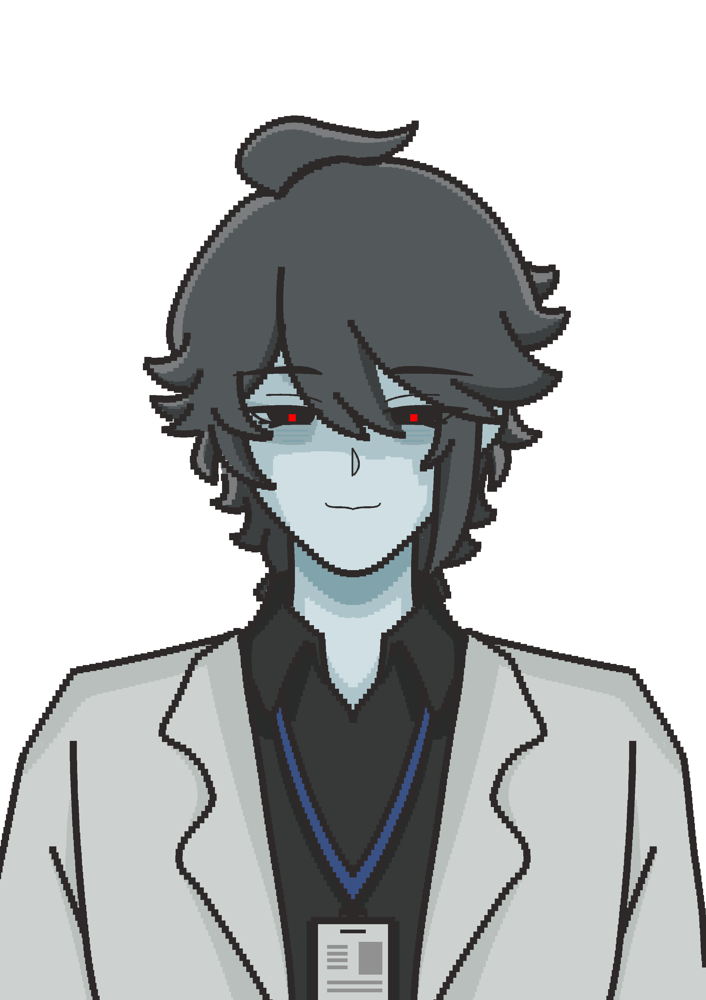
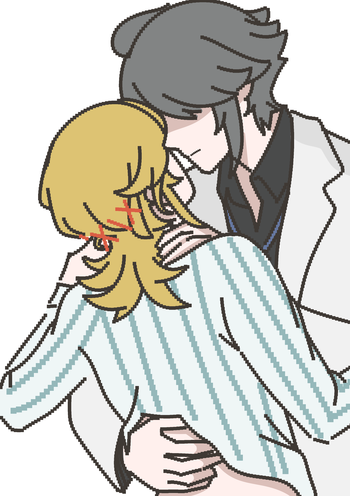

被 抓 住 了
目标：找到 3 张门禁卡，从南侧消防通道离开
门禁卡 ◆◆◆
被发现
WASD 移动 · 鼠标转向 · E 拾取 · SHIFT 疾走 · CTRL 潜行 · ESC 暂停
消 防 通 道 · 绿 灯
门就在眼前。放行的是他的签名——也是你的自由。
E 离开 · Q 留下
⚠ 内 容 警 告
本作品为【艾尔海森×卡维（知妙）】同人恐怖向游戏，非原神官方内容。作品仅为同人艺术创作，角色设定、剧情为二创，不代表原作官方人物关系。
游戏包含：突然惊吓 / 突脸、紧张音效、恐怖画面、心理惊悚情节。
胆小、对惊吓画面敏感、未成年人请谨慎游玩或直接退出。
本同人作品仅用于爱好者创作，无商业用途。本作品为免费同人，未经作者许可，禁止倒卖、打包售卖、用于任何盈利行为。
创作 · 玉米
夜间查房
NIGHT ROUND
凌晨 3:12。你醒了。
手腕上还留着约束带的红痕，走廊尽头的灯管在闪。
病历 0709 号 · 卡维
主治医师 · 艾尔海森
建议：继续留院观察，禁止外出。
主治医师 · 艾尔海森
建议：继续留院观察，禁止外出。
他在查房。每一条走廊他都会走到。
别让他看见你 —— 也别让他听见你。
W A S D移动
鼠标 / ←→转身
SHIFT奔跑（很吵）
CTRL潜行（很慢，很轻）
E拾取门禁卡
Q出口处 · 撕掉许可单留下
ESC暂停
建议戴上耳机。游戏含突发音效与闪烁画面。
暂 停
PAUSED
他还在走廊里等你。
被 发 现
CAUGHT
你被按回病床上。约束带重新系紧，比上一次更牢。
逃 出 去 了
ESCAPED
凌晨的风灌进喉咙。你回头看了一眼那栋楼。
点击继续 ▼
特 殊 病 房
ENDING 3
病历 0709 号 · 补记
出逃未遂：三次。
处置：约束带更换为四点式。转入 L 区特殊病房。
探视：无。窗户：封。门：从外面锁。
出逃未遂：三次。
处置：约束带更换为四点式。转入 L 区特殊病房。
探视：无。窗户：封。门：从外面锁。
「这下，你哪儿也去不了了。」
「别用那种眼神看我。我只是——把你收得更近一点而已。」
「别用那种眼神看我。我只是——把你收得更近一点而已。」

留 下 来 了
ENDING 4
「许可是你自己撕的。我一个字都没有逼你。」
他把碎片一片一片捡起来，动作轻得像在收拾一件医疗器械。
「症状好转。依赖度：完全。」他在病历上落笔，
「今晚加餐，想吃什么自己挑。——真乖。」
他把碎片一片一片捡起来，动作轻得像在收拾一件医疗器械。
「症状好转。依赖度：完全。」他在病历上落笔，
「今晚加餐，想吃什么自己挑。——真乖。」
你发现自己在笑。原来被夸奖是这样的。
原来你逃了一整晚，想要的只是这个。

逃 亡 失 败
ENDING 1
红灯。「未查检出·院·许·可——已通知主治医师。」
身后，脚步声不疾不徐地穿过走廊。你转身——他已经站在那里了。
「许可单呢？」他俯身，替你拂掉肩上的灰。「没有我的签字，你哪里也去不了。」